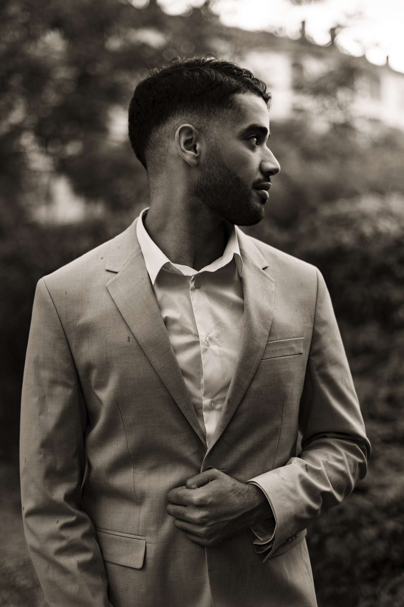
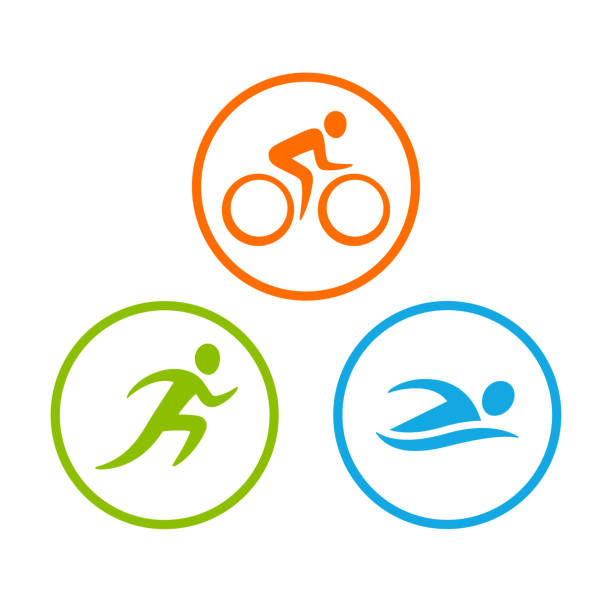

Bonjour ! Je m'appelle Hadak Walid, passionné par le développement web et la création d'expériences numériques modernes, intuitives et efficaces. Curieux et toujours en quête de nouveaux défis, je mets mes compétences au service de projets créatifs, que ce soit en front-end, back-end ou en design.
Grâce à mes expériences et à ma formation, j’ai acquis une solide maîtrise des outils comme HTML, CSS, JavaScript, et bien plus encore. Mon objectif ? Donner vie à des idées et résoudre des problèmes de manière élégante et fonctionnelle.
Si vous cherchez quelqu’un de rigoureux, motivé et impliqué, vous êtes au bon endroit. N'hésitez pas à me contacter pour collaborer ensemble !
📄 Téléchargez mon CVLycée Juliette Récamier
Obtention d’un baccalauréat général avec spécialités sciences de l'ingénieur et sciences économiques et sociales.
Université Claude Bernard Lyon 1
Projet de licence informatique pour approfondir mes connaissances en développement web, architecture logicielle, et gestion de bases de données.
BTS SIO
Formation axée sur le développement, la gestion de projets informatiques, et la cybersécurité. Option SLAM (Solutions Logicielles et Applications Métiers).

API triathlon
Concours Gourmetise
Entreprise : Elixir Création
Durant mes stages, j’ai participé à la création de plusieurs site vitrine responsive, en collaborant avec une petite équipe. J’ai utilisé Wordpress. Cette expérience m’a permis de mieux comprendre le travail en entreprise et le cycle de développement d’un projet web.
Voir les stagesEntreprise : Intermarché
Préparation des commandes clients en drive, gestion de la chaîne logistique en magasin, respect des délais et organisation. Cette expérience m’a appris la rigueur, la réactivité et le travail en équipe.